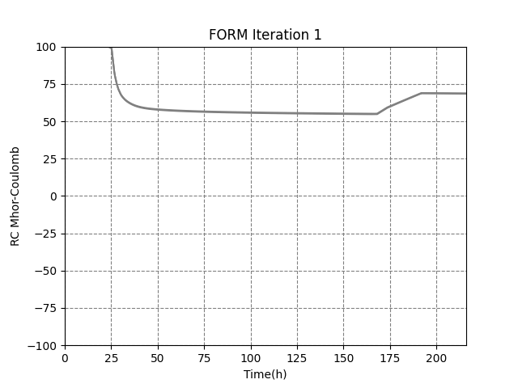

Uso detalhado da CLI
1) Estrutura inicial do projeto
O comando confiacim init gera a seguinte estrutura:
1 2 3 4 5 6 7 8 9 10 11 12 | |
O executavel do tencim na pasta bin pode ser trocado para qualquer versão desejada. Na pasta input deve ficar os arquivos de entrada. Na caso já temos um exemplo simples na pasta. Na pasta output é onde serão salvos os resultados. Exitem alguns conjutos de arquivos de entrada na pasta tests/files/input que podem ser usados como base para novos casos.
Os arquivos de entradas são os arquivos do tencim1D mais alguns arquivos extras *.jinja e *.yaml. Na pasta templates estão os arquivos de entrada que serão gerados dinamicamente, esses arquivos precisam ter o sufixo *.jinja. No arquivo case.yml estão as configurações da simulação do confiacim. No campo variables: são definidos as variáves que serão utilizadas, é necessario que existam pelo menos uma variaval na lista. No campo correlationssão definidas as correlações entre as variáveis, este campo é opcional. No campo config temos as configurações do confiacim.
1 2 3 4 5 6 7 8 9 10 11 12 13 14 15 16 17 18 19 20 21 22 23 24 25 26 27 28 29 30 31 32 33 34 | |
Para verificar se as configuração da simulção foram lidas corretamente temos o comando:
1 | |
2) Análise probablística com FORM
Para rodar basta fazer
1 | |
Para uma saida mais verbosa basta utilizar a opção --verbose ou -v:
1 | |
Após rodar a estrutura de diretórios deve ser:
1 2 3 4 5 6 7 8 9 10 11 12 13 14 15 16 17 18 19 20 21 22 23 24 25 26 27 28 29 30 31 32 33 | |
Na pasta output estão salvos os resultados desejados do confiacim para cada amostra em cada iteração. Por exemplo, na pasta it_0001 estão os resultados da iteração 1 do form.
Comando parar o confiacim plotar todos os resultados de RC:
1 | |
Fig1 - Série histórica do valor do RC agrupados por iterações.

Para plotar os resultados de RC de uma iteração específica:
1 | |

Fig2 - Serie histórica do valor do RC da iteração 1.
Para salvar os gráficos pode-se usar a opção -s ou --save
1 | |
Os gráficos serão salvos na pasta simulation/output/case1/graphs.
Para um gráfico mais iterativo existe a possibilidade de usar o plotly:
1 | |
3) Análise deterministica
Para rodar a análise determinítica base:
1 2 3 4 5 6 7 8 | |
Para plotar os RCs da análise deterministica:
1 | |
Para truncar a analise em 174 basta:
1 | |
Será gerado um o novo case.dat. E caso não exita será criado um case_original.dat com o conteudo original do arquivo case.dat.
Caso se queira agora truncar a análise em 139 você poded usar o case_original.dat, ou seja:
1 | |
Para voltar para o original basta usar step maior que o original, por exemplo:
1 | |
4) Configurações
Algumas configurações extras podem ser feitas através do arquivo .env. Este arquivo deve estar na raiz do projeto, porem ele é completamente opcional.
1 2 3 4 5 6 7 8 | |
A variável de ambiente CONFIACIM_LOG_LEVEL irá definir o nivel de informações que serão escritos no aquivo form.log para cada iteração do form. Temos dois niveis atualmente ERROR e DEBUG. No nível ERROR só teremos informações caso haja algum problema numérico como Inf ou divisão por zero. No nível DEBUG todas as variaveis usadas no form serão escritas no arquivo em todas as iterações.
A váriavel CONFIACIM_EXEC_TENCIM_MODE define o modelo de excução do Tencim1D. As opções são: SEQUENTIALparar rodar o tencim1D em sequencial; MULTIPROCpara rodar utilizando multiprocessos. O valor padrão é o MULTIPROC. O número de processos será o menor valor entre número de variaveis + 1 e o número de n. Onde CPUS retornado pelo função os.cpu_count() dividido por 2.
Outra forma de alterar os valores configurações é passando elas na hora de executar o confiacim. Por exemplo para mudar o nivel do log pode-se fazer:
1 | |
Nessa caso a variável passada na linha de comando irá prevalecer sobre a variável que está no arquivo .env.